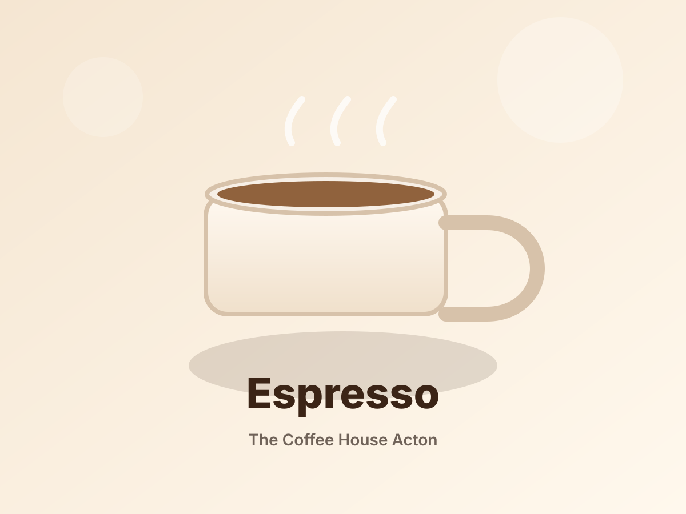
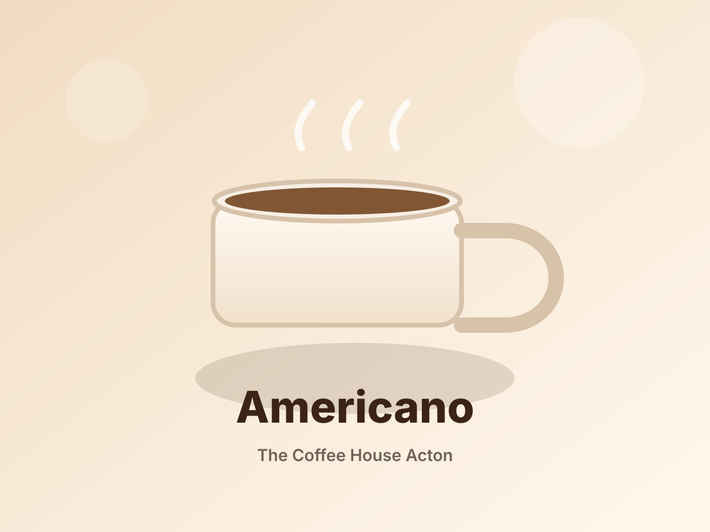
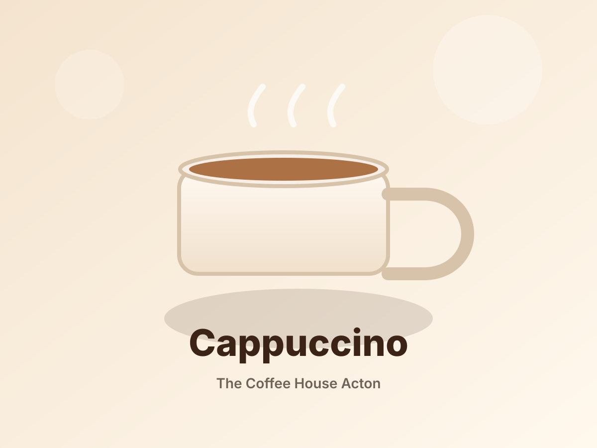
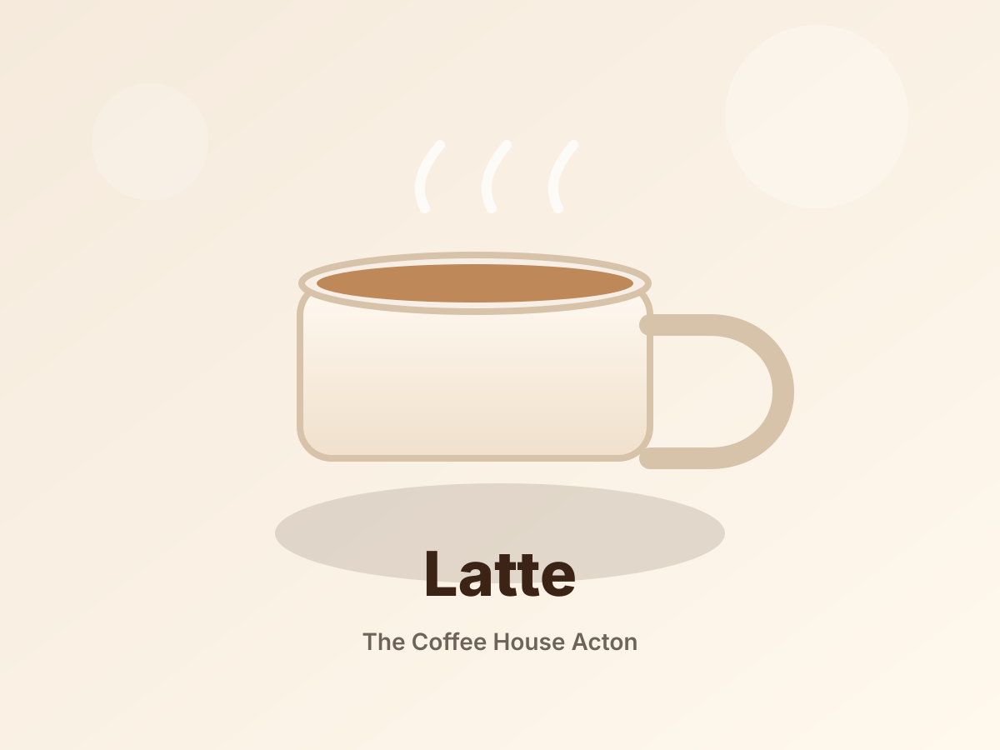
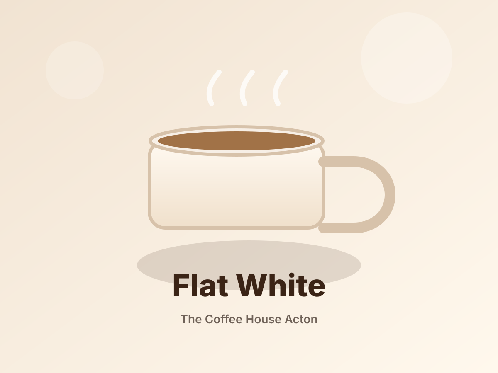
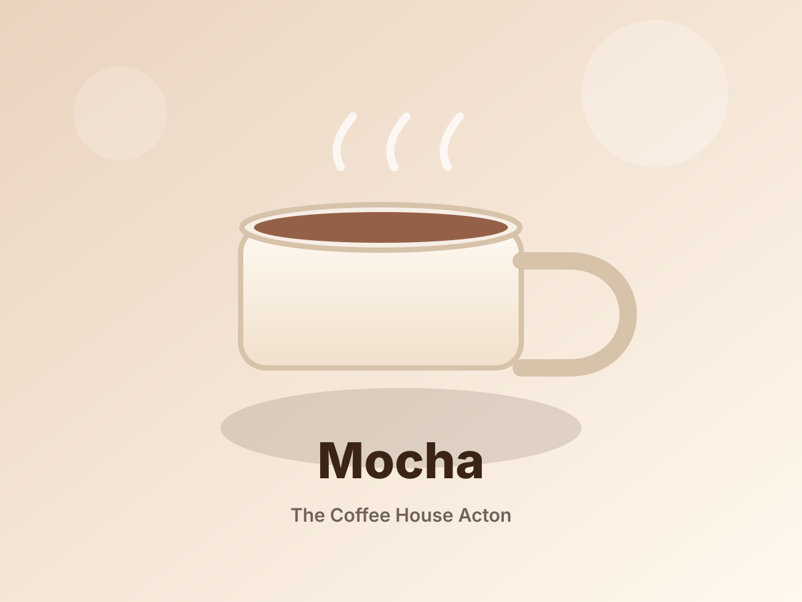

Freshly made
Breakfasts, brunch dishes, wraps, plates, hot drinks and cold drinks.
Acton High Street cafe
A relaxed neighbourhood cafe in the heart of Acton, serving breakfast, brunch, lunch, dinner, fresh drinks and vegan-friendly options.
About us
The Coffee House Acton is built around generous food, fresh drinks and a welcoming atmosphere. Stop in for a quick coffee, meet family for brunch or sit down for a full meal.
Breakfasts, brunch dishes, wraps, plates, hot drinks and cold drinks.
A comfortable local spot for solo visits, friends and family meals.
Choices available for different appetites, including vegan-friendly options.
Located on Acton High Street with takeaway, seating and table service available.
Coffee menu
Each coffee type now has its own visual card. We can replace these starter images with real cafe photos as soon as you send them over.

Rich, concentrated coffee with a bold finish.

Espresso topped with hot water for a smoother, longer drink.

A classic balance of espresso, steamed milk and foam.

Smooth espresso with silky steamed milk.

Velvety milk with a stronger espresso-forward taste.

Coffee, chocolate and steamed milk combined in one cup.
Instagram gallery
This area is ready for real photos from the cafe's Instagram feed. For now, it shows polished placeholders so the layout is ready for review.
Replace with a hero food or coffee shot from Instagram.
Perfect for latte art or a counter shot.
Perfect for breakfast or brunch dishes.
Perfect for interior or ambience shots.
Replace with a standout dessert, lunch or signature drink photo.
Customer love
Make it easy for happy customers to support the cafe with a quick review.
Warm service.
Review highlight
Fresh food and generous plates.
Review highlight